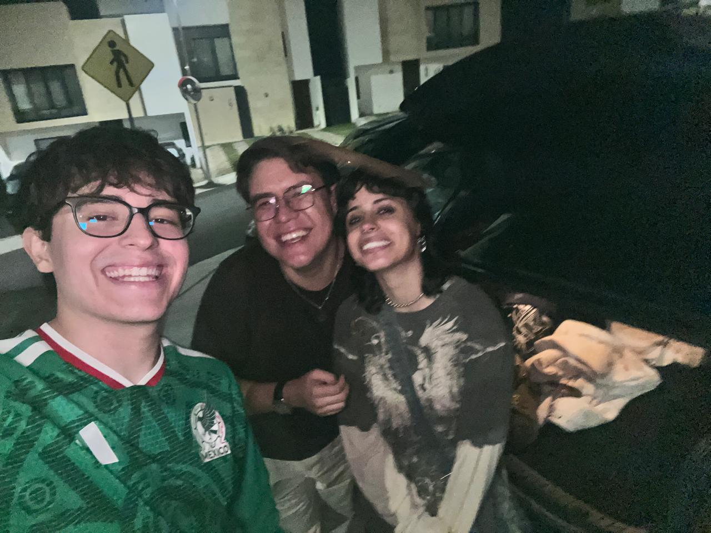
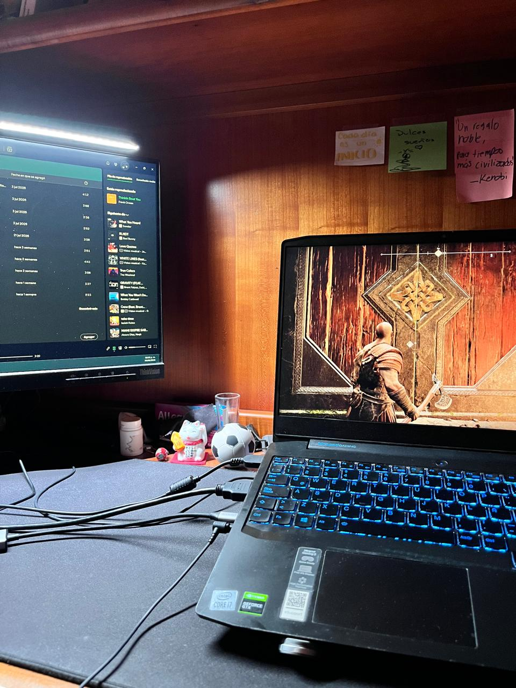

Sobre mí
Soy una persona que le gusta la programación, la ciencia de datos y la tecnologia. Tengo un perro llamado Roy que es raza welsh corgi pembroke.
Desarrollo web
Ciencia de datos
Visualización
Amigos
Soy muy afortunado de poder tener muchos amigos con los cuales pasar el tiempo. Si es que no estoy pasando el tiempo con ellos, probablemente esté jugando videojuegos o juegos de mesa.
Galería de imágenes (pasa el cursor o da doble clic):

